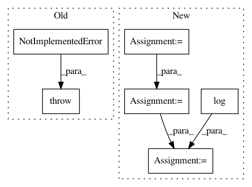

ac62541de1f98c9d18b2d9f3b997dd781651dbc4,pyhawkes/internals/weights.py,GammaMixtureWeights,meanfieldupdate_p,#GammaMixtureWeights#,255
Before Change
raise NotImplementedError()
def meanfieldupdate_p(self):
raise NotImplementedError()
def meanfieldupdate_kappa_v(self):
raise NotImplementedError()
After Change
parameters of the weight distributions.
:return:
logit_p = 0
logit_p += self.network.expected_log_p() - self.network.expected_log_notp()
logit_p += self.network.kappa * self.network.expected_log_v() - gammaln(self.network.kappa)
logit_p += gammaln(self.mf_kappa_1) - self.mf_kappa_1 * np.log(self.mf_v_1)
logit_p += gammaln(self.kappa_0) - self.kappa_0 * np.log(self.nu_0)
logit_p += self.mf_kappa_0 * np.log(self.mf_v_0) - gammaln(self.mf_kappa_0)
self.mf_p = logistic(logit_p)
def meanfieldupdate_kappa_v(self, EZ, N):
In pattern: SUPERPATTERN
Frequency: 3
Non-data size: 6
Instances
Project Name: slinderman/pyhawkes
Commit Name: ac62541de1f98c9d18b2d9f3b997dd781651dbc4
Time: 2015-01-21
Author: scott.linderman@gmail.com
File Name: pyhawkes/internals/weights.py
Class Name: GammaMixtureWeights
Method Name: meanfieldupdate_p
Project Name: mil-tokyo/webdnn
Commit Name: 5cf0a414aa1f7c17fdc0eced712de551c335a25c
Time: 2017-11-30
Author: y.kikura@gmail.com
File Name: src/graph_transpiler/webdnn/frontend/chainer/functions/math.py
Class Name:
Method Name: _convert_log2
Project Name: mil-tokyo/webdnn
Commit Name: 5cf0a414aa1f7c17fdc0eced712de551c335a25c
Time: 2017-11-30
Author: y.kikura@gmail.com
File Name: src/graph_transpiler/webdnn/frontend/chainer/functions/math.py
Class Name:
Method Name: _convert_log10